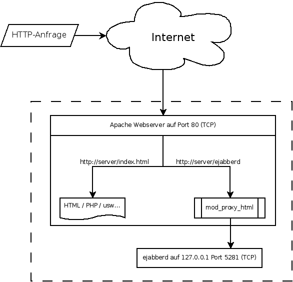

mod proxy html
Dieser Artikel wurde für die folgenden Ubuntu-Versionen getestet:
Ubuntu 16.04 Xenial Xerus
Zum Verständnis dieses Artikels sind folgende Seiten hilfreich:
mod_proxy_html  ist ein Ausgabefilter, der HTML-Links so umschreiben kann, dass mehrere Webserver nahtlos miteinander kombiniert werden können.
ist ein Ausgabefilter, der HTML-Links so umschreiben kann, dass mehrere Webserver nahtlos miteinander kombiniert werden können.
So kann z.B. ein 2. Webserver (welchen z.B. Dienste wie ejabberd bereitstellen) unter http://server/ejabberd erreicht werden, obwohl der 2. Webserver auf der IP 127.0.0.1 und dem Port 5281 läuft. Die Hauptaufgabe (und damit der Unterschied zum "normalen" mod_proxy) besteht darin, dass das übertragene HTML so modifiziert wird, dass alle Links mit der veränderten Situation klar kommen.
Hier eine grafische Darstellung des Ganzen:

Wie im Beispiel zu sehen wird man über http://server/ejabberd auf den eingebauten Webserver vom ejabberd umgeleitet. Alle Seiten, die der ejabberd sendet, werden durch mod_proxy_html so verändert, dass die Links mit http://server/ejabberd/ beginnen. So ist eine normale Funktion der ejabberd-Administrationsseiten gewährleistet. Natürlich funktioniert dieses Verfahren auch mit vielen anderen Diensten.
Vorbereitungen¶
Installation¶
Seit Apache 2.4, welcher Ubuntu 13.10 in den Paketquellen ist, ist mod_proxy_html standardmäßig enthalten und muss nur aktiviert werden.
Einrichtung¶
Zum Verwenden des Moduls muss die VirtualHost-Konfiguration entsprechend angepasst werden. Hier ein Ausschnitt einer möglichen Konfiguration:
1 2 3 4 5 6 7 8 9 10 11 | <VirtualHost *> ... ProxyRequests Off <Proxy *> Order deny,allow Allow from all </Proxy> ProxyPass /ejabberd/ http://127.0.0.1:5281/ ProxyPassReverse /ejabberd/ http://127.0.0.1:5281/ ... </VirtualHost> |
Hinweis:
Nach dieser Änderung muss der Apache Webserver neu gestartet werden (reload)[4].
Achtung!
Die Option ProxyRequests sollte ohne weitere Sicherheitsvorkehrungen (z.B. nur für bestimmte Subnetze erlaubt) NICHT auf On gesetzt werden, ansonst hat man einen sog. Open Proxy, was im Normalfall ein großes Sicherheitsproblem darstellt!

- Erstellt mit Inyoka
-
 2004 – 2017 ubuntuusers.de • Einige Rechte vorbehalten
2004 – 2017 ubuntuusers.de • Einige Rechte vorbehalten
Lizenz • Kontakt • Datenschutz • Impressum • Serverstatus -
Serverhousing gespendet von